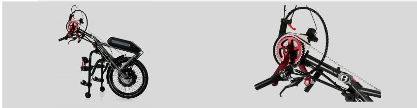
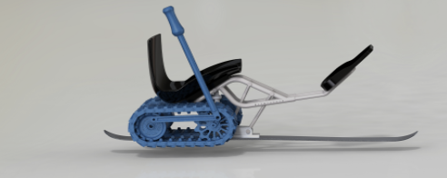
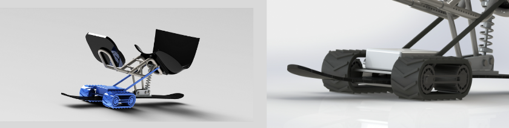
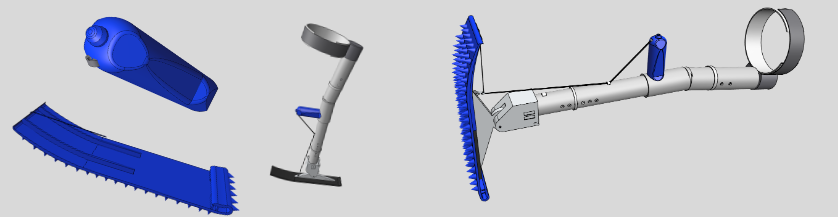
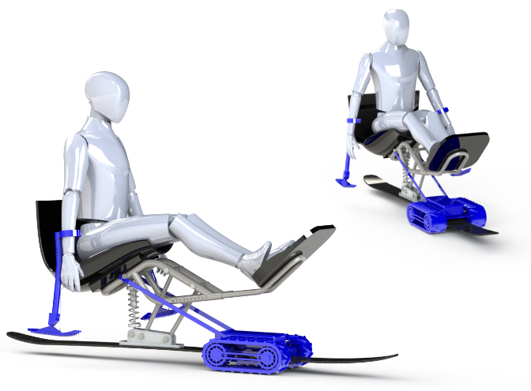

MonoPowder
Inclusive Ski Touring
The Problem
Experienced sitski users may like to ski off-piste, but can only do so with lift access. There is currently no solution for them to overcome flat or uphill sections in the backcountry, except for being towed.
We want to create a solution for independent uphill propulsion to enable sitski users to join their friends on ski tours.
Our Initial Brainstorming Ideas
How would you propel yourself upwards? We worked out three initial ideas for the propulsion system:
Hand-Cycle Setup
The idea is to attach a hybrid, electrically assisted hand-cycle system, which is common for wheelchairs, to the sitski. A rubber track would provide tracktion in the snow. The big problem here is the complex attachment and the lack of balance on rougher terrain, hence the need for external stabilization.

Source: EMPULSE Attitude Hybrid
| Pros | Cons |
|---|---|
| Existing systems on the market | Lack of balance and need for external stabilization |
| Ergonomic power delivery and hybrid assistance | Bulky system, complex attachment to the sitski |
Verdict: The idea was not pursued further because of better alternatives
Rod-Assisted Tracks
The idea is to attach big, hybrid tracks underneath the sitski, which are driven by a handheld rod and assiste by an electric motor. Traction would be good, but the power delivery is not as ergonomic and it would also need external stabilization.

| Pros | Cons |
|---|---|
| Good position underneath the sitski | Lack of balance and need for external stabilization |
| Less complex system | Power delivery not as ergonomic |
Verdict: The idea was not pursued further because of better alternatives
Fully Motorized Tracks
The idea is to attach smaller, electrically motorized tracks to the ski for propulsion. The hands would be free to balance, push and steer the sitski with outriggers. The tracks would preferably be placed in front and attached to the sitski frame with ropes, as this is the simplest attachment. The drawback of this would be limited traction, as most of the weight is in the back of the ski, especially when going up a slope.

| Pros | Cons |
|---|---|
| Small, relatively simple and easy to attach | Position in front not optimal for traction |
| Hand are free for balance, steering and pushing | Not a hybrid system, but fully motorized. |
Verdict: The idea is part of the final solution, as it’s the most viable option.
Adapted Outriggers
For the small, motorized tracks proposed above, the hands would be free for balance, pushing and steering. To make this viable, the plates of the outriggers, which are usually small skis for the downhill, would have to be replaced by snowshoe-like plates to provide traction when pushing and steering. Also, the handle would need to house the actuator and for the motors, which would be in joystick-form to accomodate selectively actuating the two tracks for steering assistance. Optionally, the handle could contain a force sensor to measure the pushing force and couple this to the motor power, similar to how e-bikes operate. For the downhill, the traction plate could be swapped out for the regular ski plate.

| Pros | Cons |
|---|---|
| Small, relatively simple and easy to attach | Electronics in the handle |
| Full control over the motors with just one thumb | Force sensor for assistance would be hard to implement |
Verdict: The idea is part of the final solution for balance, pushing and steering
Our Solution
Two motorized tracks are attached to the front of the ski which tow the monoskibob by two ropes. The ski sits on a plate between the tracks to provide more traction with its weight. The tracks can be slid on and off the front of the ski easily and quickly. The battery for the two electric motors sits on top to weigh down the tracks even more. We estimate that the battery needs to have a capacity of about 500Wh.
The tracks are actuated via a joystick on the tip of one handle. With sideways motion, the tracks can be selectively actuated to assist with steering. The actuator is connected to the tracks wirelessly to further simplify the system.
The outriggers are adapted with traction plates on the bottom to enable good traction in the snow for pushing, balancing and steering. The angle on the plate can be adjusted with a pulley system like for the regular downhill outrigger. The traction plates can be swapped out for the regular ski plates for the downhill.
(Optional) To enable hybrid power delivery similar to an e-bike, the user could assist the motor by pushing the sitski uphill with the outriggers. To smoothly couple the arm assistance to the motor controls, a pressure sensor could be added to the handle of the outriggers to measure the pushing force exerted.

Feedback
Thank you for the interest in our little project. If you have any questions, ideas or other feedback, we would be happy to hear from you: Link to Google Forms (german)